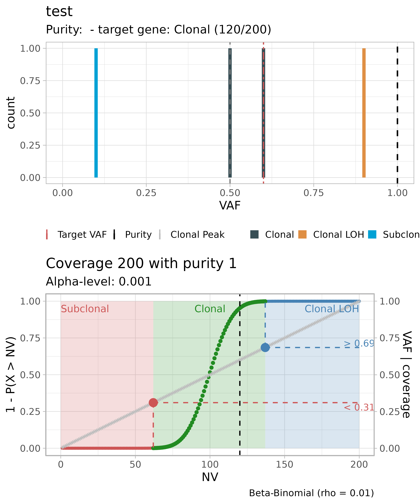
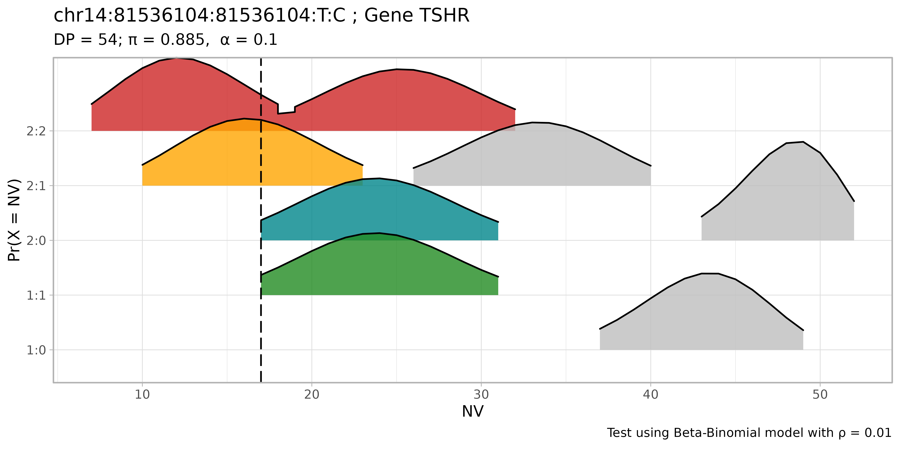

Requirements
TAPACLOTH can be used to classify the clonality and zygosity of somatic mutations detected from targeted panel sequencing of a cancer sample.
Practically, the TAPACLOTH model can also be used with other gene sequencing assays. However, if one has access to more advanced data such as high-resolution whole-genome sequening, we suggest using other deconvolution methodologies.
TAPACLOTH will assess, for every mutation, any of the following statuses:
- subclonal mutation;
- heterozygous clonal mutation within a diploid heterozygous tumour genome;
- homozygous clonal mutation within a loss of heterozygosity of the tumour genome.
TAPACLOTH implements two type of statistical tests; the required inputs for TAPACLOTH are:
- read/counts or variant allele frequencies from the panel assay
- tumour sample purity \(\pi\)
Note: tumour sample purity \(\pi\) can be estimated by copy number assessment, pathology assessment, or in general any other approach outside the scope of TAPACLOTH.
Inputs format
It should be a tibble with sample(sample name), gene(name of the target gene), nv (number of reads with variant), dp (coverage), VAF (variant allele frequency) and purity (sample purity) columns.
For example:
data = dplyr::tibble(sample = "test",
gene = c("test gene 1", "test gene 2", "test gene 3", "target gene"),
nv = c(10, 50, 90, 120),
dp = c(100, 100, 100, 200),
VAF = c(0.1, 0.5, 0.9, 0.6),
purity = 1
)
print(data)
#> # A tibble: 4 × 6
#> sample gene nv dp VAF purity
#> <chr> <chr> <dbl> <dbl> <dbl> <dbl>
#> 1 test test gene 1 10 100 0.1 1
#> 2 test test gene 2 50 100 0.5 1
#> 3 test test gene 3 90 100 0.9 1
#> 4 test target gene 120 200 0.6 1Read-counts based test
This test is based on a model of the sequencing outcome as a Binomial process in which the number of reads with a variant represents the number of successes over a total number of trials that corresponds to coverage. Since a clonal variant within a diploid heterozygous tumour genome affects one out of two alleles of all the tumour cells, the success probability of the counting process corresponds to half of the tumour sample purity. Sub-clonal and clonal mutations are expected to have smaller and larger success probabilities, respectively. Given coverage and sample purity, a variant is thus classified as either sub-clonal if the number of reads supporting it falls outside left of the chosen confidence interval of the distribution, clonal LOH if it falls outside right, or heterozygous clonal if it falls inside the confidence interval. A Beta-Binomial distribution can be used to take into account the over-dispersion affecting sequencing.
In the following example, the classification task is run using the Beta-Binomial model. The output contains a fit object that is basically the same input table with the additional column class_binom, plus the input parameters of the used test.
classified_data = run_classifier(
data = data,
alpha_level = 1e-3,
model = "Beta-Binomial",
rho = 0.01
)
#>
#> ── test ────────────────────────────────────────────────────────────────────────
print(classified_data)
#> $fit
#> # A tibble: 4 × 7
#> sample gene nv dp VAF purity class_binom
#> <chr> <chr> <dbl> <dbl> <dbl> <dbl> <chr>
#> 1 test test gene 1 10 100 0.1 1 Subclonal
#> 2 test test gene 2 50 100 0.5 1 Clonal
#> 3 test test gene 3 90 100 0.9 1 Clonal LOH
#> 4 test target gene 120 200 0.6 1 Clonal
#>
#> $model
#> [1] "Beta-Binomial"
#>
#> $rho
#> [1] 0.01
#>
#> $alpha_level
#> [1] 0.001Results of the classification task for a target gene can be plotted using function plot_tapacloth.
plot_tapacloth(fit = classified_data, target_gene = "target gene", sample_name = "test")
#> Warning: replacing previous import 'cli::num_ansi_colors' by
#> 'crayon::num_ansi_colors' when loading 'BMix'
#> Warning: replacing previous import 'crayon::%+%' by 'ggplot2::%+%' when loading
#> 'BMix'
#> ✔ Loading BMix, 'Binomial and Beta-Binomial univariate mixtures'. Support : <https://caravagnalab.github.io/BMix/>
#> Warning: replacing previous import 'cli::num_ansi_colors' by
#> 'crayon::num_ansi_colors' when loading 'easypar'
#> ✔ Loading CNAqc, 'Copy Number Alteration quality check'. Support : <https://caravagn.github.io/CNAqc/>
#> Warning: Removed 6 rows containing missing values (geom_bar).
VAF/\(\pi\) based test
This test is a working alternative to the Binomial test when number of reads with variant and coverage are not known, and only VAF and sample purity are provided. The test is based on the 3-quantiles splitting of the distribution of VAF/\(\pi\) ratios for a target gene, across the whole provided dataset. Variants of the gene are classified either as Subclonal/CLonal (heterozygous) if their VAF/\(\pi\) ratio is lower than the second 3-quantile or as Clonal LOH if it is larger.
data = dplyr::tibble(sample = paste0("test ", seq(1:20)),
gene = "target gene",
nv = seq(10,100,4.6) %>% round(0),
dp = 100,
VAF = (seq(10,100,4.6) %>% round(0))/100,
purity = 1
)
classified_data = run_classifier(
data = data,
model = "terzile"
)
#>
#> ── target gene ─────────────────────────────────────────────────────────────────
classified_data$fit
#> # A tibble: 20 × 7
#> sample gene nv dp VAF purity class_terzile
#> <chr> <chr> <dbl> <dbl> <dbl> <dbl> <chr>
#> 1 test 1 target gene 10 100 0.1 1 Subclonal/Clonal
#> 2 test 2 target gene 15 100 0.15 1 Subclonal/Clonal
#> 3 test 3 target gene 19 100 0.19 1 Subclonal/Clonal
#> 4 test 4 target gene 24 100 0.24 1 Subclonal/Clonal
#> 5 test 5 target gene 28 100 0.28 1 Subclonal/Clonal
#> 6 test 6 target gene 33 100 0.33 1 Subclonal/Clonal
#> 7 test 7 target gene 38 100 0.38 1 Subclonal/Clonal
#> 8 test 8 target gene 42 100 0.42 1 Clonal LOH
#> 9 test 9 target gene 47 100 0.47 1 Clonal LOH
#> 10 test 10 target gene 51 100 0.51 1 Clonal LOH
#> 11 test 11 target gene 56 100 0.56 1 Clonal LOH
#> 12 test 12 target gene 61 100 0.61 1 Clonal LOH
#> 13 test 13 target gene 65 100 0.65 1 Clonal LOH
#> 14 test 14 target gene 70 100 0.7 1 Clonal LOH
#> 15 test 15 target gene 74 100 0.74 1 Clonal LOH
#> 16 test 16 target gene 79 100 0.79 1 Clonal LOH
#> 17 test 17 target gene 84 100 0.84 1 Clonal LOH
#> 18 test 18 target gene 88 100 0.88 1 Clonal LOH
#> 19 test 19 target gene 93 100 0.93 1 Clonal LOH
#> 20 test 20 target gene 97 100 0.97 1 Clonal LOH
plot_tapacloth(fit = classified_data, target_gene = "target gene", sample_name = "test 1")
#> Warning: Removed 2 rows containing missing values (geom_bar).